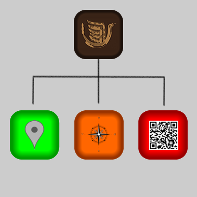

Moundville Interactive Experience
|
 |
 |
 |
|
|
Proposed System
|
The Environment
Located in Moundville, Alabama, the Moundville Archeological Park
is one of the greatest
resources of archeological data on Native Americans and
as such has a wonderful collection of priceless artifacts.
In fact, there are so many artifacts that there is a great
demand for the ability to display and disseminate information
about the historical significance of this site to the general
public. This coupled with the desire for an immersive educational
experience has created a need for a new perspective on the
museum experience, both for the indoor museum exhibits and
the experience of the outdoor park.
This proposed system will address the education concerns
of the Moundville Archeological Park by embracing smartphone
technology as a way to provide an innovative and engaging
experience to visitors. Such an immersive educational experience
will provide the museum with a modern outlet for educating
the public and allowing the visitors to view archeology
in a new and exciting way.
System Outline
The general structure of the system has two main domains,
a mobile application for the visitors of the park and a
web portal for the administrative purposes of updating and
maintaining the data made available to the visitors. Both
domains focus on the end goal of providing visitors access
to information about artifacts written in concise articles
with photographs or artistic renderings. The mobile application
can also be thought of as three main methods or experiences
with which visitors can interact with the park.
Administrative Portal
The main focus of the administrative portal is as a method
of updating and maintaining a catalog of articles on major
sites or artifacts. The administrator would access this
portal through a web browser and use it to view current
articles, add new articles, edit existing articles, and
delete articles if needed. Other additional uses of the
portal will be to update locations of specific sites or
where artifacts were discovered by interacting with a map
of the park and printing out QR codes for articles to be
placed at exhibit locations.
Mobile Application in General
A mobile application will be developed for visitors to
download onto their Android smartphone by scanning a QR
code displayed in the museum. This application will open
onto a “splash screen” which will display a general welcome
message and give the user a menu of three separate experiences
to choose from. These experiences are listed “Scan an Exhibit
Item”, “Park Map”, and “Discoveries Near Me”.
Scan an Exhibition Item
A simple method for interacting with exhibits, this experience
will allow a visitor to scan a QR code which will bring
up the article associated with that exhibit.
Park Map
Using a custom Google Map, this experience will pull
up the map of the park on the visitor’s smartphone. Pins
placed on the map through the Administrator Portal will
populate the map. Visitors can then hover over the pins
to display titles of the locations and click on the pins
to bring up the article associated with the location.
Discoveries Near Me
While outside viewing the mounds, a visitor can use this
experience to pull up a list of articles related to their
current location. This experience will populate a list of
artifacts, sites, and related photographs or artistic renderings
for the visitor to browse through. When a visitor clicks
on an item in the list, this action will bring up the associated
article. This list will show only artifacts and sites associated
with the visitor’s immediate location, within a predetermined
area.
|